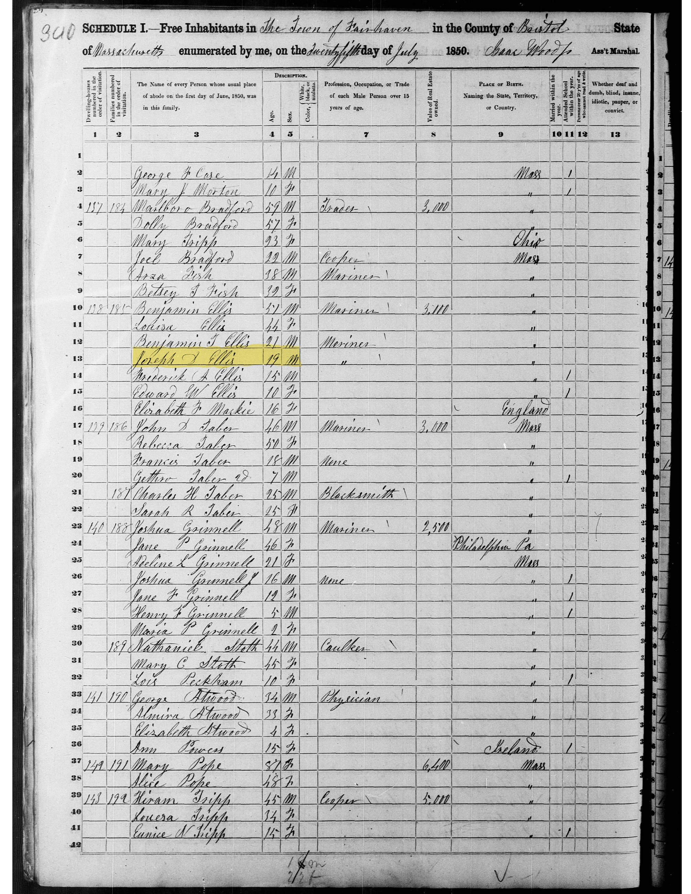

Joseph D. Ellis
Family and early years at sea
A whaling family in a whaling town
Joseph D. Ellis was born into a whaling family in a whaling town. On July 2, 1831, he entered the world in Fairhaven, Massachusetts, the son of Louisa and Captain Benjamin Ellis. His father was born in Rochester, about fifteen miles from New Bedford, the port that would become the center of the American whaling industry.[1] During the early nineteenth century, the industry’s center shifted from Nantucket to the mainland, transforming the communities around New Bedford’s waterfront.[2]
Benjamin married Fairhaven native Louisa Damon on October 16, 1826.[3] Their daughter Susan was born in 1828. That same year, Benjamin departed aboard the Pocahontas on his earliest known voyage as captain. The voyage took him to the coast of Africa, where the crew collected 217 barrels of sperm oil.[4] Their first son, Benjamin, followed in 1829, and Joseph was born two years later.[8]
The Ellis children were likely born at home, as home birth was customary in antebellum New England.[5] Whether Captain Ellis was present for Joseph’s birth remains uncertain. One of his voyages, aboard the bark Pioneer, spanned 1831–1832.[6] His work at sea meant that family life unfolded around long absences and intervals of reunion.
One can imagine the lure of the sea enticing young Joseph as his father returned with stories from distant waters. Whaling was also a family affair. Joseph’s uncle Ebenezer sailed on multiple whaling voyages, including one commanded by Captain Ellis aboard the Pocahontas in 1828–1829.[7] His older brother Benjamin sailed with their father aboard the Marcella as early as 1842. His brother Edward also accompanied their father, although the exact voyage has yet to be identified.[9] These departures left Joseph’s mother and other family members to sustain the household ashore.
Learning the work at sea
In 1848, Joseph joined his father aboard the bark George Porter. He shipped as a greenhand, receiving a lay of 1/165—a fractional share of the voyage’s proceeds. His older brother Benjamin served as a boatsteerer, with a lay of 1/80. Voyage and crew citations to add
Joseph may have seen the voyage as an opportunity to spend time with a father whose work had kept him away for much of his childhood. Life aboard ship, however, was shaped by rank. Captains and officers occupied different accommodations and generally ate separately from the forecastle hands. Being the captain’s son did not necessarily mean sharing his table or his daily routine. Contextual citation to add
Joseph likely had more opportunities to work alongside his brother Benjamin. Boatsteerers were the harpooners, responsible for securing the first iron in a whale during a pursuit. Serving in a whaleboat could have given Joseph opportunities to observe and learn that work, although his precise duties during individual hunts are not yet documented.
The George Porter secured at least 450 barrels of oil, according to the Dennis Wood abstract cited in the research notes. The ship was abandoned in the Seychelles on April 1, 1850. How Joseph and the other crew members made their way home remains a question for further research. Full abstract citation to add
The 1850 census lists Joseph D. Ellis in Fairhaven at age nineteen, in the household containing Benjamin and Louisa Ellis. His occupation is indicated as “mariner” by a ditto mark beneath his older brother’s entry. The same occupation appears for Benjamin Ellis, making the family’s connection to the sea visible on the census page.

Joseph D. Ellis, age 19, mariner. Click the citation for a larger view.
A boatsteerer aboard the William Wirt
Later in 1850, Joseph joined the William Wirt, commanded by Captain Owen Fisher. Whereas the George Porter had taken him into the Indian Ocean, the William Wirt was bound for the Pacific and Arctic Oceans. His experience had apparently served him well: he now shipped as a boatsteerer, receiving a lay of 1/90. Crew-list citation to add
In the account-book entries examined for this biography, Joseph purchased nothing from the captain’s stores. He did receive cash advances during stops at Paita, Lahaina, and Honolulu. Those advances offer glimpses of his opportunities to go ashore, although they do not establish what he bought or how he spent his time. He may have purchased replacement clothing or enjoyed comforts unavailable aboard ship. Account-book pages and dates to add
Port visits also offered whalemen opportunities to drink, socialize, and form relationships ashore. Others sought religious fellowship and followed principles of temperance and chastity. Joseph’s own choices remain unclear. His later involvement in a Congregational church raises questions about the place religion may have occupied in his younger life, but it cannot by itself establish his conduct during this voyage. Contextual and church citations to add
Advancement did not spare him criticism. During a whale hunt early in the voyage, First Mate James L. Fisher criticized the weakness of Ellis’s throw. The account book also records a $10 bounty, although the date and reason for that payment need to be checked before connecting it to his performance as a harpooner. Exact log wording, date, and account entry to add
Unlike many of the men who served aboard the William Wirt, Ellis appears to have remained through the voyage. Whether he later sailed aboard another whaling ship remains unclear.
Sources and notes
- Whaling History, “Pocahontas: 1828–1829,” accessed October 30, 2026. Voyage and crew search. Editorial note: The original note is retained; Joseph’s exact birth date and his father’s birthplace need their own vital-record citations.
- Lisa Norling, Captain Ahab Had a Wife: New England Women and the Whalefishery, 1720–1870 (Chapel Hill: University of North Carolina Press, 2000), 120.
- “Massachusetts, State Vital Records, 1638–1927,” marriage record for Benjamin Ellis, October 16, 1826, FamilySearch. Record link.
- Whaling History, “Pocahontas: 1828–1829.” Voyage and crew search.
- Karen V. Hansen, A Very Social Time: Crafting Community in Antebellum New England (University of California Press, 1996), 102. This supports the historical context, not the circumstances of an individual Ellis birth.
- Whaling History, “Pioneer: 1831–1832,” voyage record AV11673, accessed October 29, 2026. Voyage record.
- Whaling History, Pocahontas voyage and crew records, 1828–1829. Search link from the original draft.
- Citation for Benjamin Ellis’s birth in 1829 to be supplied. The original draft left this note blank.
- “Many Years in China: Death of Edward Watson Ellis of Fairhaven,” The Standard-Times (New Bedford, MA), October 16, 1911, 12. Newspapers.com.
- 1850 United States census, Fairhaven, Bristol County, Massachusetts, manuscript page 300, dwelling 178, family 185, lines 10–16; Joseph D. Ellis, line 13. “Bristol, Massachusetts, United States records,” images, FamilySearch, image 554 of 641; United States National Archives and Records Administration; image group 004194638. Source citation supplied with the uploaded PDF, dated October 29, 2026. FamilySearch image. Original uploaded PDF. The yellow highlight is present in the supplied copy.
Research and editorial notes
This is an edited research draft. Citations supplied by the author are retained; only the uploaded census has been inspected in preparing this page. Unfinished references remain marked in the text.
- The duplicated opening was consolidated. The incomplete sentence after the Pocahontas voyage was removed.
- Verify the causes and timing of the shift from Nantucket to New Bedford before restoring the longer explanation.
- Verify the claim that Captain Ellis commanded at least fifteen voyages between 1827 and 1861, and was at sea during all or part of every year of Joseph’s childhood.
- Develop the discussion of women’s work and long separations using Norling; distinguish any literary comparison from historical evidence.
- Add crew records for Ebenezer’s and Benjamin’s voyages, the George Porter lays, and Joseph’s William Wirt lay.
- Add contextual sources for shipboard rank, meals and accommodations, boatsteerers’ responsibilities, and whaleboat crew selection. The proposed comparison to noncommissioned officers needs qualification.
- Supply the Dennis Wood abstract reference and trace the crew’s return after the abandonment in the Seychelles. The biography no longer says the ship itself returned.
- Verify shore-visit dates, purchases, the $10 bounty’s purpose, Fisher’s exact criticism, and the church citation. Cash advances do not establish particular spending or behavior ashore.
- Define and calculate crew turnover before restoring the claim that it exceeded 200 percent. Distinguish missing departure records from confirmed continuous service.
- Corrected the William Wirt captain’s name from Owen Wilson to Owen Fisher, consistent with the crew project.